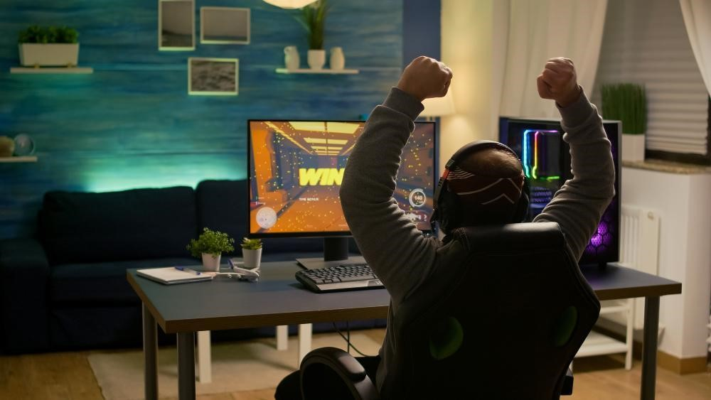
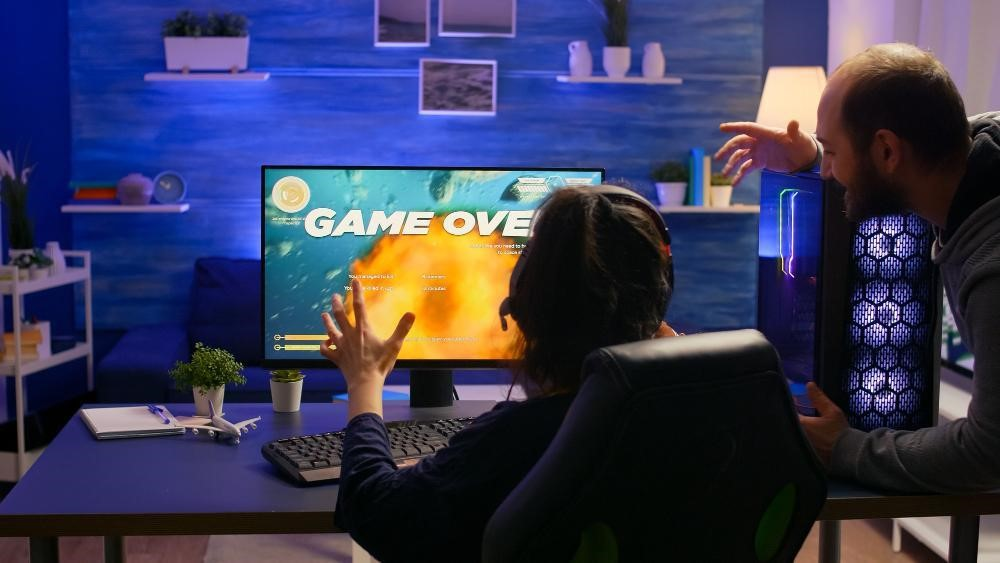
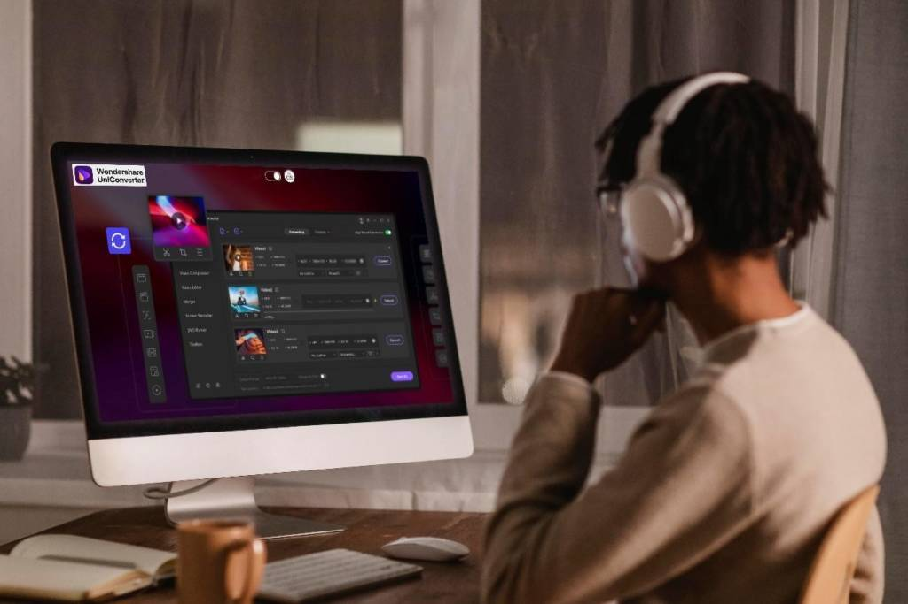

Tudo sobre E-sports: O que é e porque está cada vez mais popular
E-Sports é o nome dado às competições de jogos virtuais, uma modalidade que vem ganhando popularidade nos últimos anos. Descubra tudo sobre E-Sports neste artigo!
Fonte: Freepik
Você já ouviu falar em E-sports? O termo, que se popularizou nos últimos anos, representa uma modalidade esportiva que pode ser feita sem movimentar o corpo, mas que exige muito da estratégia e do pensamento crítico. Com uma audiência cada vez mais crescente, ainda há quem não saiba o que é E-sports e porque essa popularidade está tão alta. Para explicar o assunto, de uma vez por todas, descubra tudo sobre E-sports nesse artigo. E é possível que, até o final da matéria, você também queira ser um praticante da modalidade.
O que são E-Sports?
E-Sport é o termo utilizado para classificar competições de jogos virtuais, especialmente aquelas realizadas por profissionais, que podem ser assistidas pelo público pela televisão ou por plataformas de streaming. Muitos tipos de jogos são contemplados pelos E-Sports e a maioria dos atletas começam sua carreira de modo despretensioso, jogando um game em casa. Muitos desses atletas descobrem como gravar a tela do computador para compartilhar os melhores momentos de sua experiência dentro do jogo e, a partir daí, chamam a atenção do público. Há também pessoas que criam contas em sites de streaming para transmitir ao vivo o desenvolvimento de um game.
Quais são os tipos de E-Sports?
Assim como qualquer outra prática esportiva, os E-Sports contam com várias categorias e modalidades. Por ser um tipo de jogo criado no exterior, as categorias costumam ser apresentadas em siglas, que vêm de termos em inglês. Existem pelo menos 6 tipos de E-Sports bastante populares. São eles: MOBA (Multiplayer Online Battle), FPS (First Person Shooter), Card Games, Battle Royale, Simuladores, Evo Fighting games.
Fonte: Freepik
É muito comum que os competidores optem por jogos que despertem seu interesse de modo genuíno. Foi por gostar de jogar, sem grandes expectativas, que alguns dos melhores jogadores de E-Sports do país iniciaram.
Existem competições?
Como todo esporte, na modalidade virtual também existem competições, que podem acontecer no âmbito nacional ou internacional. Normalmente, essas competições acontecem em games que permitem o combate entre os jogadores, como os títulos League of Legends e CS:GO. Muitos desses torneios acontecem em grandes arenas, com público que acompanha tudo em tempo real, como uma partida de futebol ou de basquete. Em 2018, por exemplo, a competição League of Legends Mid-Season Invitational contou com público presencial de 7.000 e mais de 60.000.000 de espectadores online, sendo considerada a maior audiência do gênero.
Como posso me tornar um jogador de E-Sports?
Uma das maiores vantagens dos E-Sports é que trata-se de uma modalidade relativamente acessível. Isso porque, a maior exigência para fazer parte deste universo, é ter um bom computador – porém, limitações físicas não são um empecilho para a prática. Quem quer começar uma carreira como esportista de games, deve escolher um jogo que gosta para se especializar e desenvolver suas habilidades. Outra dica é começar a fazer transmissões ao vivo ou a compartilhar suas experiências em plataformas como o YouTube. Nesse caso, vale contar com softwares com diferentes ferramentas de vídeo, como o UniConverter. Neste programa, o usuário consegue fazer a gravação da tela de um jogo, para editar posteriormente, em uma mesma interface. O UniConverter também consegue converter formatos e compactar o tamanho de um vídeo, o que é ideal para enviar a produção por aplicativos, como WhatsApp ou Telegram.
Fonte: Freepik
Utilize esses registros para mostrar mais das suas habilidades e ganhar popularidade dentro do mundo gamer. É possível que, em algum ponto, você consiga montar uma equipe ou seja convidado para participar de competições. Já imaginou?
Por que a modalidade está cada vez mais popular?
Assim como as gerações anteriores tinham total interesse por competições de esportes como o futebol, as gerações atuais também gostam de competições. Entretanto, suas preferências focam nos E-Sports. Com um público crescente, de pessoas que conseguem acessar os jogos com facilidade, não é difícil entender porque está cada vez mais popular acompanhar e participar de jogos de E-Sports. Com uma geração mais conectada, que cria diferentes tipos de relação online, participar de games se tornou uma maneira divertida de passar o tempo. Além disso, os E-Sports também são responsáveis por uma grande movimentação financeira. De acordo com o relatório da Global Esports Market Report, somente em 2019, o mercado de games movimentou US$1,1 bilhão. Ou seja, com alta aceitação e investimentos cada vez maiores, fica fácil entender porque os E-Sports estão cada vez mais populares. E depois deste artigo, deu vontade de criar sua conta para começar a jogar? Com dedicação e persistência, você pode virar um atleta do mundo digital!
Reportagem do site Gazeta Esportiva.